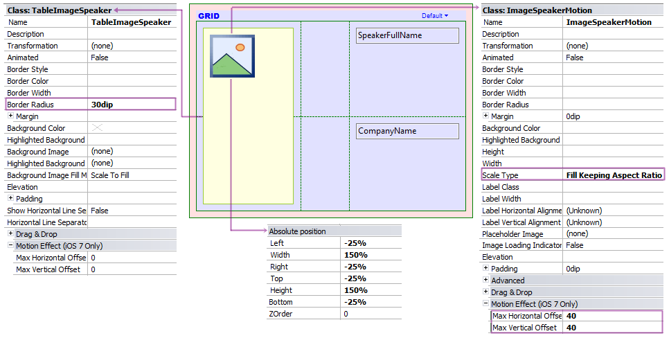
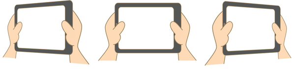
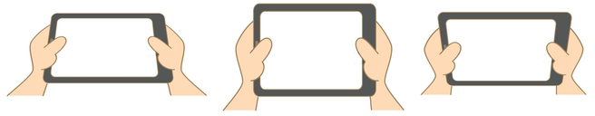
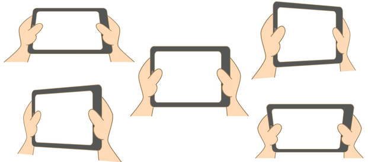

This group of properties is under the Theme for Smart Devices classes (see Scope) to provide the end user with a UI/UX improvement called Motion Effect, closely related with Parallax Effect. This effect is a result of the multilayered design incorporated in iOS 7 UI, affecting the appearance of the interface when the end user device is tilted horizontally and vertically, giving the impression of depth and movement.
The properties under this group allow you to easily incorporate this impressive effect in the application.
| Property | Description |
| Max Horizontal Offset | It indicates the maximum offset that the control can reach when the end user tilts his device horizontally (left to right or right to left). It can be interpreted as a factor of movement - higher values imply more movement. |
| Max Vertical Offset | Likewise, when the end user tilts his device vertically (front to back or back to front). |
Both properties accept integer values, allowing for smooth movements of the control layer and its container layer.
Depending on the effect that you want to achieve, its value can be in one of the three categories listed below.
In EventDay, suppose you want to apply this UI/UX feature to each speaker picture on the list.
First, open the List section of the WorkWithDevicesSpeaker object.
Since the aim is to have a moving image, it should be embedded in a Canvas control, expanded beyond the edge limits and filled when the picture moves.
So, the layout could be designed as follows:

The details of this decision are listed below.
Just by setting a few properties, the runtime behavior will be as shown below.
| Horizontal tilt |
|
 |
| Vertical tilt |
|
 |
| Horizontal & Vertical tilt |
|
 |
Theme class: Image, Table, Calendar, Group
Generators: Smart Device (iOS)
This property is available as from GeneXus 15
| Backlinks |
| Toc:Native Mobile Applications Development |